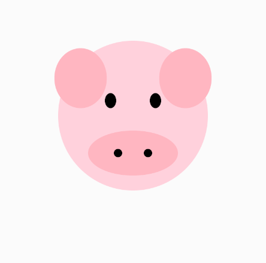

Binär ins Oktalsystem & Hexdalsystem
Um eine Binärzahl in Oktal oder Hexadezimal umzuwandeln, teilt man die Binärzahl in kleine Gruppen auf. Für Oktal nimmt man Gruppen mit drei Bits, für Hexadezimal Gruppen mit vier Bits. Jede Gruppe wird dann in die entsprechende Zahl oder den Buchstaben umgerechnet.
Oktalsystem
Das Oktalsystem ist ein Zahlensystem mit der Basis 8. Es verwendet die Ziffern von 0 bis 7, also insgesamt acht verschiedene Zahlen. Jede Stelle in einer Oktalzahl hat eine Position, die mit einer Potenz von 8 multipliziert wird. Zum Beispiel bedeutet die Zahl 237 im Oktalsystem: 2 × 8² + 3 × 8¹ + 7 × 8⁰. Das Oktalsystem wird oft in der Informatik benutzt, weil es gut zur Darstellung von Binärzahlen passt. Man kann eine Binärzahl einfach in Oktal umwandeln, indem man sie in Gruppen von drei Bits aufteilt.
Hexadezimalsystem
Das Hexadezimalsystem ist ein Zahlensystem mit der Basis 16. Es verwendet die Zahlen 0 bis 9 und die Buchstaben A bis F, wobei A für 10, B für 11 und so weiter bis F für 15 steht. Jede Stelle in einer Hexadezimalzahl hat einen Wert, der mit einer Potenz von 16 multipliziert wird. Zum Beispiel bedeutet die Zahl 2F im Hexadezimalsystem: 2 × 16¹ + 15 × 16⁰. Das Hexadezimalsystem wird oft in der Informatik benutzt, weil es die Darstellung von Binärzahlen vereinfacht. Man kann eine Binärzahl leicht in Hexadezimal umwandeln, indem man sie in Gruppen von vier Bits aufteilt.
Fazit
Das Oktal- und Hexadezimalsystem sind wichtige Zahlensysteme, die vor allem in der Informatik verwendet werden. Sie machen es einfacher, mit langen Binärzahlen zu arbeiten, weil man diese in kleinere Gruppen aufteilen und leichter lesen kann. So helfen sie, Daten besser zu verstehen und zu verarbeiten.

p5.js ist eine Programmiersprache, die es leicht macht, Bilder, Formen und Animationen am Computer zu erstellen. Sie wird oft genutzt, um Programmieren kreativ und verständlich zu lernen. Mit p5.js kann man schnell sehen, was man programmiert hat, und so Spaß beim Lernen haben.
Einfaches Zeichnen mit p5.js
Mit p5.js kann man schnell und einfach verschiedene Formen wie Kreise, Rechtecke oder Linien auf dem Bildschirm zeichnen. Dadurch ist es ganz leicht, eigene Bilder oder kleine Kunstwerke zu erstellen. Man muss nur wenige Zeilen Code schreiben, um etwas Sichtbares zu machen. Das macht p5.js besonders gut für Anfänger, die das Programmieren lernen und dabei kreativ sein wollen. Außerdem kann man die Formen bewegen oder verändern, um spannende Animationen zu gestalten.
Programmieren lernen mit Spass
p5.js hilft dabei, Programmieren auf eine kreative und einfache Weise zu lernen. Wenn man etwas programmiert, sieht man sofort das Ergebnis auf dem Bildschirm. Das macht es spannend und motiviert, neue Dinge auszuprobieren und eigene Ideen umzusetzen. Man kann spielerisch verschiedene Befehle testen und dadurch besser verstehen, wie Programmieren funktioniert. So macht das Lernen nicht nur Spaß, sondern man wird auch schnell sicherer im Umgang mit Code.
Fazit
p5.js ist ein hilfreiches Werkzeug, um Programmieren kreativ und verständlich zu lernen. Es zeigt schnell sichtbare Ergebnisse, was motiviert und das Lernen erleichtert. Anfänger können spielerisch mit Code üben und eigene Ideen leicht umsetzen. So macht Programmieren Spaß und man lernt wichtige Grundlagen Schritt für Schritt.